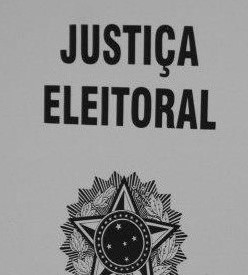

Seu voto também constrói o futuro.
O título de eleitor é um documento importante para os cidadãos brasileiros, pois é através dele que a população pode participar das eleições e escolher seus representantes políticos. No Brasil, o voto é obrigatório para pessoas entre 18 e 70 anos, enquanto para jovens de 16 e 17 anos ele é opcional. Além de permitir o voto, o título de eleitor também pode ser necessário em algumas situações, como concursos públicos, matrícula em instituições e emissão de outros documentos.
Para tirar o título de eleitor, é necessário fazer um cadastro na Justiça Eleitoral, processo que pode ser realizado de forma online ou presencial. O documento é importante porque garante ao cidadão o direito de votar e participar das eleições.
O processo para emitir o título de eleitor é gratuito, ou seja, não é necessário pagar nenhuma taxa. Geralmente, são solicitados documentos pessoais, como RG, CPF e comprovante de residência. Após o cadastro e a aprovação dos dados, o cidadão já pode acessar seu título digitalmente pelo aplicativo e-Título ou utilizar o documento nas eleições.
Clique no link para emitir ou consultar seu título de eleitor